| DISTRICT/SEASON |
VARIETIES |
| A. Rainfed |
|
|
|
| 1. Adipattam (Jun-July) |
Variety |
: |
TNAUSUF 7 (CO 4), COSFV 5 |
| Coimbatore, Erode, Salem, Namakkal, |
| Tirunelveli, Dindigul, Dharmapuri, |
Hybrid |
: |
KBSH 1, TNAU Sunflower Hybrid CO 2 |
| Tiruchirapalli, Perambalur, Karur |
|
|
|
| 2. Karthigaipattam(Oct- Nov) |
|
|
|
| Cuddalore, Villupuram, Virudhunagar, Sivagangai |
Variety |
: |
TNAUSUF 7 (CO 4), COSFV 5 |
| Ramanathapuram, Madurai, Dindigul, |
Hybrid |
: |
KBSH 1, TNAU Sunflower Hybrid CO 2 |
| Theni, Tiruchirapalli, Perambalur, Karur, |
|
|
|
| Tirunelveli |
|
|
|
| B. Irrigated |
|
|
|
| 1. Adipattam (June-July) |
|
|
|
| Coimbatore, Erode, Salem, Namakkal,Tirunelveli, |
Variety |
: |
TNAUSUF 7 (CO 4), COSFV 5 |
| Dindigul, Dharmapuri, Tiruchirapalli, |
Hybrid |
: |
KBSH 1, KBSH 44, DRSH 1, TNAU |
| Perambalur, Karur |
Sunflower Hybrid CO 2 |
| 2. Karthigaipattam (Oct - Nov) |
|
|
|
| Cuddalore, Villupuram, Virudhunagar, |
Variety |
: |
TNAUSUF 7 (CO 4), COSFV 5 |
| Sivagangai , Ramanathapuram, Madurai, |
Hybrid |
: |
KBSH 1, KBSH 44, DRSH 1, TNAU Sunflower Hybrid CO 2 |
| Dindigul,Theni, Tiruchirapalli, Perambalur, |
|
| Karur, Tirunelveli |
|
|
|
| 3. Margazhipattam (Dec-Jan) |
|
|
|
| Salem, Namakkal, Dharmapuri, Erode, |
Variety |
: |
TNAUSUF 7 (CO 4), COSFV 5 |
| Coimbatore, Madurai, Dindigul, Theni, |
Hybrid |
: |
KBSH 1, KBSH 44, DRSH1, TNAU Sunflower Hybrid CO 2 |
| Tirunelveli, Thoothukudi |
|
| 4. Chithiraipattam (April - May) |
Variety |
: |
TNAUSUF 7 (CO 4), COSFV 5 |
| Coimbatore, Erode, Dharmapuri, Salem, |
| Namakkal, Tiruchirapalli, Perambalur, Karur |
Hybrid |
: |
KBSH 1, KBSH 44, DRSH1, TNAU Sunflower Hyrbid CO 2 |
|
|
DESCRIPTION OF SUNFLOWER VARIETIES
| Particulars |
TNAUSUF 7 (CO 4) |
COSFV 5 |
TNAU Sunflower
Hybrid CO 2 |
| Parentage |
Cross derivative of Dwarf X Surya |
Cross derivative of Helianthus annus X H. preacox |
COSF 1A X CSFI 99 |
| Duration (days) |
80-85 |
85-90 |
90-95 |
| Yield (kg/ha) |
| Rainfed |
1500 |
1500 |
1950 |
| Irrigated |
1700 |
1700 |
2250 |
| Oil content (%) |
37-39 |
40-42 |
38-40 |
| Ray floret |
Light Yellow |
Yellow |
Light Yellow |
| Plant height (cm) |
145-175 |
145-165 |
160-175 |
| Seed size & colour |
Black |
Dark brown |
Dark brown |
| 1000 seed weight (g) |
45-60 |
48-50 |
50-60 |
| Volume weight (g/100ml) |
40-42 |
45-48 |
40-45 |
|
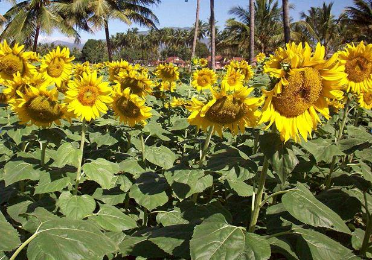
TNAU Sunflower Hybrid CO2 |
1. FIELD PREPARATION
Plough once with tractor or twice with iron-plough or three to four times with country-plough till all the clods are broken and a fine tilth is obtained.
2. APPLICATION OF FERTILIZERS
- Spread 12.5 t/ha of FYM or compost or composted coir pith evenly on the field before the last ploughing and incorporate in the soil by working a country plough.
- Apply NPK fertilizers basally as per soil test recommendations. If soil test recommendations are not available, follow the blanket NPK/ha for both irrigated and rainfed crops.
| Season |
Blanket recommendation of Nutrients (kg/ha) |
| N |
P2O5 |
K2O |
| Hybrids |
Irrigated |
60 |
90 |
60 |
| Rainfed |
40 |
50 |
40 |
| Varieties |
Irrigated |
60 |
30 |
30 |
| Rainfed |
40 |
50 |
40 |
Biofertilizer : Soil application - Mix 10 packets (2000 g/ha) of Azospirillum and
10 packets(2000 g/ha) of Phosphobacteria or 20 packets of Azophos(4000 g/ha) with 25 kg FYM and 25 kg soil and apply before sowing.
3. APPLICATION OF MICRONUTRIENTS
- Mix 12.5 kg/ha of micronutrient mixture formulated by the Department of Agriculture, Tamil Nadu with enough sand to make total quantity of 50 kg/ha.
- (or) For rainfed sunflower apply TNAU MN mixture @ 7.5 kg ha -1 as enriched FYM for variety and 10 kg ha-1 as enriched FYM for hybrid and for Irrigated sunflower apply TNAU MN mixture @ 12.5 kg ha-1 as enriched FYM for variety and 15 kg ha-1 as enriched FYM for hybrid (Prepare enriched FYM at 1:10 ratio of MN mixture & FYM ; mix at friable moisture &incubate for one month in shade).
- Apply the mixture over the furrows and top two thirds of the ridges before sowing.
- Do not incorporate the mixture in the soil.
- To overcome manganese deficiency, foliar spray of 0.5% MnSO4 on 30, 40 and 50th day / after sowing.
- For zinc deficiency, apply 25 kg/ha ZnSO4 as basal, or 0.5% ZnSO4 spray on 30, 40 and 50th day after sowing.
4. FORMING RIDGES AND FURROWS
- Form ridges and furrows 6 m long.
- Use bund-former or ridge plough to economise and
- Form irrigation channels across and ridges according to the topography of the field.
 |
|
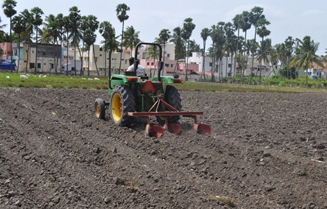 |
| FORMING RIDGES AND FURROWS |
5. SEED RATE
|
Rainfed |
Irrigated |
| Varieties |
7 kg/ha |
6 kg/ha |
| Hybrids |
5 kg/ha |
4 kg/ha |
6. SEED TREATMENT
- Soaking seeds in 2% ZnSO4 for 12 hrs and shade drying is recommended for rainfed sowing.
- Treat the seed with Trichoderma @4g/kg. This can be done just before sowing. It is compatible with biofertilizers. Such seeds should not be treated with fungicides.
- Treat the seeds with Carbendazim or Thiram at 2 g/kg of seed.
- Treat the seeds 24 hours prior to sowing.
- Azospirillum : Use 3 packets of Azospirillum (600 g/ha) and 3 packets (600 g/ha) of Phosphobacteria or 6 packets of Azophos (1200 g/ha) for treating seeds using rice kanji as binder. Dry the treated seeds in shade for 15 minutes and sow immediately.
- Moist hydration for 24 hours in moist gunny bags followed by drying and seed dressing with Thiram @ 2g/kg to enhance field emergence.
- Seeds dried to 8 - 9% moisture content, treated with Thiram @ 2g/kg and packed in polylined (300 guage) cloth bag can store upto 9 months with 70% germination.
|
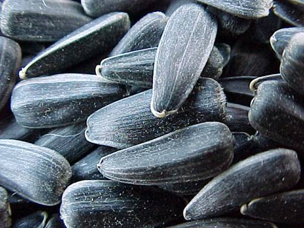 |
7. SOWING
Spacing:
Hybrids: 60 cm x 30cm
Varieties: 45 cm x 30cm
- Place the seeds at a depth of 3 cm along the furrows in which the fertilizer mixture is placed and cover with soil. Put two seeds per hole.
- Irrigate the crop according to the different growth stages. Regulate irrigation according to the following growth phase.
Pre-sowing irrigation; Life irrigation; 20th day after sowing; Early bud development; Flowering-2 irrigations and Seed development-2 irrigations; Flowering period is critical.
|
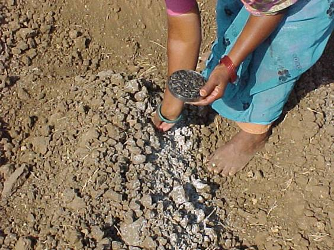
Sowing |
8. THINNING
Thin out seedlings leaving only one healthy and vigorous
seedling in each hole on the 10th day of sowing. |
| 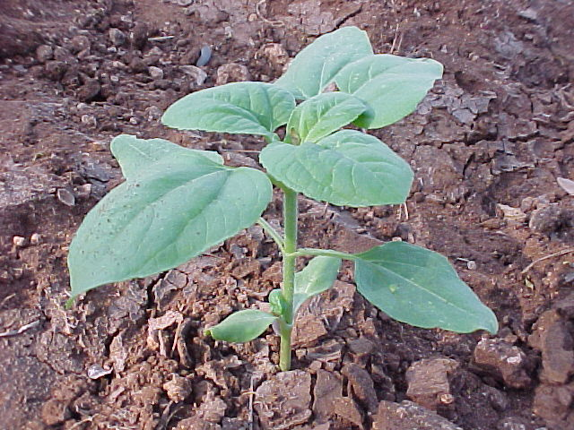 |
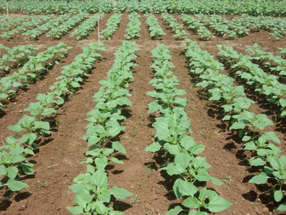 |
| 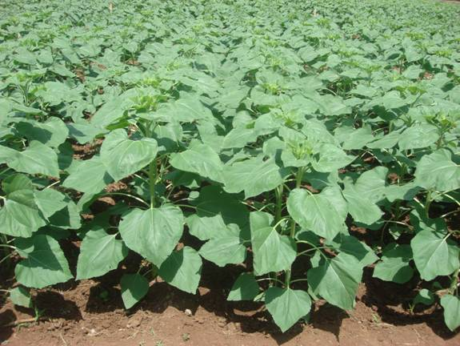 |
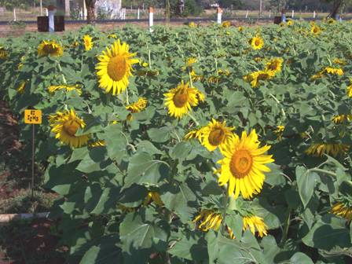 |
9. WEED MANAGEMENT
- Apply Fluchloralin at 2.0 l/ha before sowing and incorporate or apply as pre-emergence spray on 5 day after sowing followed by irrigation or apply Pendimethalin as pre-emergence spray 3 days after sowing. The spray of these herbicides has to be accomplished with Back Pack/Knapsack/Rocker sprayer fitted with flat fan nozzle using 900 l water/ha as spray fluid.
- All the herbicide application is to be followed by one late hand weeding 30 - 35 days after sowing.
- Hoe and hand weed on the 15th and 30th day of sowing and remove the weeds. Allow the weeds to dry for 2 - 3 days in the case of irrigated and then give irrigation.
|
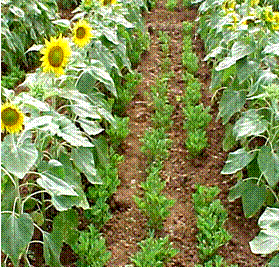
Intercropping in sunflower to smoother weeds |
10. WATER MANAGEMENT
Irrigate immediately after sowing followed by an irrigation on 4 - 5th day and later at intervals of 7 to 8 days according to soil and climatic conditions, seeding, flowering and seed development stage (ie) two weeks before and after flowering.
11. SPRAYING NAA
- Spray the hormone Napthalene Acetic Acid (NAA) at 20 ppm concentration (280 g NAA in 625 litres of water per ha) on the 30th and 60th day of sowing.
- Use a high volume sprayer and give a thorough coverage of the entire plant.
- Do not use brackish water.
12. Sulphur fertilization
Apply sulphur @ 20 kg/ha through ammonium sulphate or single super phosphate Or apply gypsum@ 200kg/ha as basal
13. Boron application
Spray borax @ 0.2 % (2g/l of water) to capitulum at ray floret opening stage to improve seed set and seed filling.
14. IMPROVING SEED SET BY MECHANICAL MEANS
- During the mid flowering phase, improve pollination by :
i. Mild rubbing of the capitulum with the hand covered with soft cloth or
ii. Rubbing two flowers face to face gently.
- The mid-flowering phase are: 58 to 60 days of planting for long duration varieties, 45 to 48 days of planting for short duration varieties.
- Do this operation in the morning hours between 9.0 and 11.00 am when pollen shedding is high.
- Keeping bee hives at the rate of 5/ha improves seed setting.
15. JUDGE WHEN TO HARVEST
Observe the bracts on the backside of the capitula. When they turn lemon yellow, the heads harden and the crop is ready for harvest.
Bird damage: Use of reflective ribbons scares the birds effectively and thus prevents loss of grain.
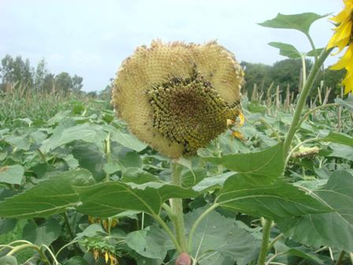
Capitullum damaged by bird |
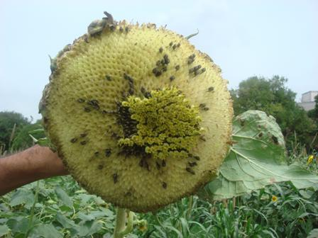 |
16. HARVESTING
i. Cut the capitula (flower heads) only
ii. Thresh and clean
a. Immediately after harvest, dry the heads in the sun for 3 days.
b. Spread the heads in thin layer and give turning once in 3 hours.
NOTE: Do not heap or store the heads before drying properly as mould fungi will develop and spoil the grain quality.
c. Thresh using a mechanical thresher, or beat with a stick and separate the grains.
d. Winnow and clean the seeds
e. Dry the seeds again in the sun for another two days
f. Store in gunny bags
|